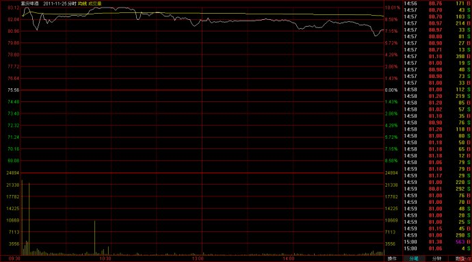
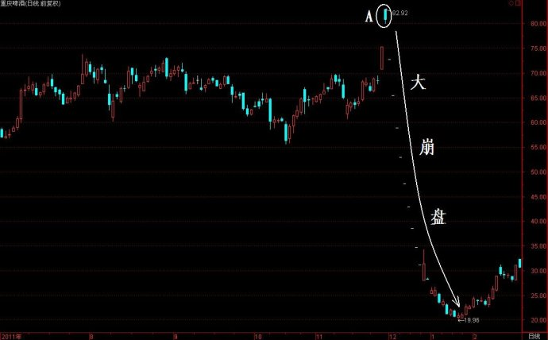
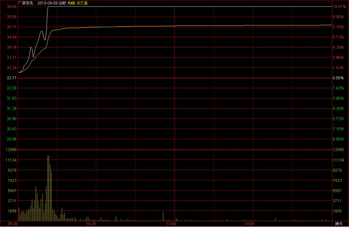
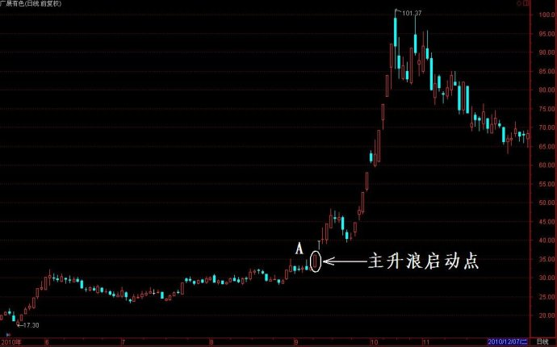

第326篇•回答网友的问题（3）
谷为陵
我在以上两篇博文中，分别回答了网友的两个问题，现在还剩两个问题：一是短线估值方法，二是投资者都需要具备哪些基本功。
关于估值方法，我在以前讲过，按照我的整体价值论，股票整体价值=内在价值+投机价值，所以，估值有两类方法：一是绝对估值法，是对股票进行内在价值与投资价值的估值，二是相对估值法，是对于股票的投机价值的估值。
假若股价跌进了内在价值区间，股票就具有了投资价值，或者说具有了绝对的价值，这时候就出现了长期价值的买点。内在价值是需要计算的。但股票跌进内在价值的情况是很少的，常见的情况是股票股价在内在价值之上波动，或者说是在投机价值区间波动。
当股价处于投机价值区间的时候，就需要运用相对估值法。相对估值最常用的方法是比较法，包括比价法、比市盈率法、比总市值法、比涨幅法等。比价法，就是将目标股票的股价与同板块、同题材、同概念的股票进行比较，看目标股票的股价是高估了，还是低估了。比较的依据是同板块、同题材、同概念股价定位具有大致的趋同性。比如，当稀土股平均股价在40～50元的时候，某只注入稀土资产的股票股价只有9～10元，那么，按照股价定位趋同性的原则，这只稀土股新贵的股价一定会倾向于向40～50元靠拢，这就是前几个月发生在ST天成上的情况，该股因注入稀土资产，使得股价从9元一气暴涨到了30元。比市盈率法、比总市值法、比涨幅法与比价法的意义相同，也是拿目标股票与同板块、同题材、同概念的股票进行比较，看目标股票的股价是高估了，还是低估了。
我在去年5月份《第160篇•科学城的估值分析》中谈到的科学城的估值，就是将该股与同题材、同概念的盛达矿业进行比较。由于两者的银矿储量相差不大，这就意味着这两只股票的总市值应该相差不大。最终的结论是，“科学城的股价将定位在12元左右”。时间过去了几乎一年，该股上个月该股股价最高为12.5元，上周为10.3元，与我预计的情况大致相当。当然，因上周国际金银价格的暴跌，市场预期金银价格将继续下跌，科学城的股价应该还会下跌。这是后话，暂且不表。
关于投资者需要具备哪些基本功，这个话题就大了。我认为，作为一个职业投资人，至少应该具备三大基本功：一是基本面分析的功夫，二是技术分析的功夫，三是看盘的功夫。关于基本面分析和技术分析的问题，我在前一篇博文中已经谈到了，只是看盘的问题还没有怎么谈过。
我认为，除了那些长期投资者之外，对于其他的短线交易者和波段操作者来说，看盘都是最基本的功夫。其中，看分时图又是最最基本的。有人认为看分时图只是短线行为，分时图只是反映股价即时变化的极短周期情况，与股价的长周期的大趋势关系不大，其实，这是一个错误的认识。由于股价运行的连续性，分时图是形成日K线的基础，而日K线又是形成K线形态与K线趋势的基础，这就意味着，某一个分时图的转折点，也许就是某一个K线形态或者是某一个K线趋势的转折点，或者说，一个K线形态或者某一个K线趋势出现转折点，一定是先在分时图上体现出来的。你若忽视这样一个分时图体现出来的转折点，你也许会错失一个主升浪的启动点，或者会错失一个股价高位的逃命点。
比如，2011年11月25日的重庆啤酒的分时图，是一个高开低走，且放量的分时图。这个分时图是一个弱势而非强势的分时图，短线高手应该不会看着这样的分时图买进的吧。

谁也没有想到，这个分时图竟然是重庆啤酒大崩盘的前兆，其后该股因疫苗失败而出现了连续10个跌停板！但分时图事先却诡异地预示了这个失败结果的可能性，这就是价格走势反应一切信息的一个生动体现。

上图盘中的A点，指的就是以上分时图的那个交易日的日K线。由此可见，一个分时图的转折点，往往就是一个巨大下跌趋势的起始点，你若忽视了这样一个分时图的转折点，那么，就很可能会被迅速“钉死”在股价高位。
我还可以举一个主升浪启动的例子。下图是2010年9月8日的广晟有色当天的分时图，可以看出，这是一个极为强势的分时图。

这个分时图是一个短线行为吗？不是，它是该股一轮涨幅达200%的主升浪的启动点！如下的日线图所示：

上图盘中的A点，指的就是以上分时图的那个交易日的日K线。你若对于A点分时图很迟钝，在那天没有买进，那你绝对会整个踏空该股这一轮主升浪。
所以，分时图与趋势的关系是很密切的。从理论上看，分时图决定着趋势的开始和结束。不仅如此，三类级别买点中（分时买点、日线买点、趋势买点），分时买点也是基础。也就是说，选择买卖点，寻找趋势的拐点，都要以最低级别的分时图作为基础。这就需要好好看盘，真正看懂盘。我以上说的还只是分时图的情况，看盘还有很多内容，因今天晚了，我以后还会陆续讲的。